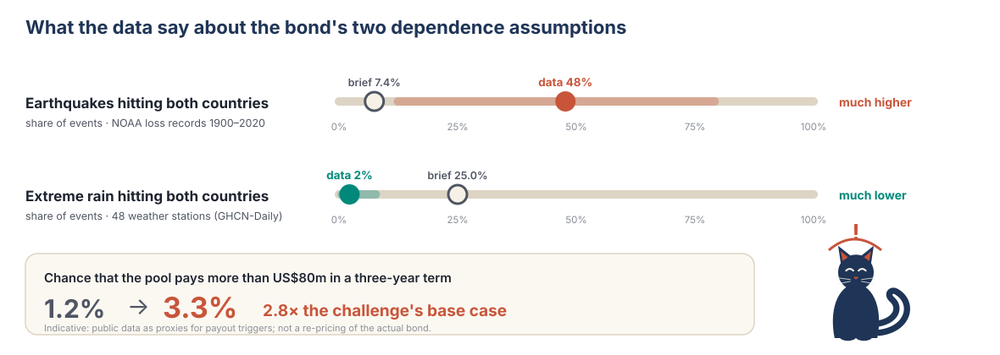

Quantum-Inspired Tensor Networks and Rényi-Doob Policy Optimization — Phase 1 Proposal
November 2026
Earthquake and rain data are public proxies for the bond’s cat-in-a-box and gridded-rainfall triggers; dependence results are a stress range, not a re-pricing. Full methods and caveats: technical annex §6.6.
ADB’s US$160m Disaster Relief Bond pays the Kyrgyz Republic and Tajikistan up to US$80m each over three years (US$70m earthquake in quarter steps, US$10m extreme rain). Whether such cover can be pooled, how much shared capital it needs, and how robust the answer is all depend on joint tails: the chance that both countries pay together. These are rare (joint exhaustion ≈ 3×10⁻⁵ per term; 10⁻⁹ to 10⁻¹³ in regional pools), the data are a few decades long, and every dependence scenario needs a new computation.
State of the art. Vendor models and Oasis aggregate simulated event and year loss tables by plain Monte Carlo; dependence enters through shared events or copulas. Rare-event methods (importance sampling, cross-entropy, splitting, SMC) reduce variance but need a good proposal. Quantum amplitude estimation offers a quadratic query speed-up but is dominated by state preparation, and claims of advantage on classical data rest on strong input assumptions (Guo and Pan 2026). At the benchmark’s joint exhaustion plain Monte Carlo with 16,384 paths returns zero in about 60% of runs; exact enumeration is instant for two countries but grows as 10ⁿ.
Exact source model. The capped three-year payout process is an exact product of commuting Poisson sources with finite increment laws (solo and shared earthquake and rain per country and dependence edge). A scenario is K = 2n + 2|E| independent small draws. This one representation feeds three solvers.
(a) Quantum-inspired exact engine. Applying the source kernels to a matrix-product state in a tilted gauge (so the rarest tails survive compression) gives the full joint law exactly. Bond dimension follows the dependence graph, not the number of countries: 9–58 for chains and rings, 367 for the data-calibrated 28-country Asia–Pacific pool. Questions about two countries are exact in ≤ 3 ms at any pool size.
(b) RDPO for the dense regime. The zero-variance sampler is the Doob h-transform of the source process, equivalently the optimal policy of a KL-regularised control problem. RDPO learns it with a log-linear soft value: cross-entropy (KL) reaches the tail, a Rényi-2 (χ²) policy gradient repairs heavy-tailed fits (variance is a χ² divergence), training paths count against the fixed budget, and the recycled estimator is exactly unbiased for any learned policy, with a 95% interval.
(c) Model risk, made explicit. Because dependence is weakly identified, we (i) bound each target over all couplings of the two countries’ laws by linear programming, (ii) propagate posterior uncertainty on the shared shares from 120 years of loss records and 48 weather stations, and (iii) express results in the quantities ADB decides on: shared capital and payout reliability.
(d) Quantum stage (Q-RDPO). A product-form version of the learned measure is loaded exactly, one small register per source, with bounded importance weights written bit by bit onto the objective qubit; iterative amplitude estimation then needs ≈ c_Q/(ε√a) state preparations. Nothing is trained on the device. A calibration trust guard accepts the quantum estimate only if it passes a goodness-of-fit test and agrees with a cheap classical pilot. The wall-clock crossover against RDPO is \(s^*(\varepsilon, \rho^2) = \kappa\,\varepsilon/\rho^2\): quantum helps only where the best classical method is hard.
Benchmark: all 25 cells of the brief (5 scenarios × 5 targets), 40 replications, 16,384 paths including training. RDPO beats the best of the brief’s four reference methods in 20 of 25 cells; on joint exhaustion the median gain is ×19 (×6.3–×171); interval coverage 94% (nominal 95%). Scrambled Sobol remains better on expected loss, and we recommend it there.
Stronger baselines, same budget and seeds. Against adaptive multilevel splitting, SMC on exponential tilts and a normalising-flow importance sampler, RDPO wins on every rare target by ×5.4–×8. SMC on the optimal twist is the strongest fixed baseline.
Scaling to 28 and 50 countries. Against exact tensor-network references RDPO keeps 0.1%–4.2% error as the target falls to 10⁻¹³ and beats exponential twisting in 16 of 16 settings at the same path budget. New exact references for dense, bounded-treewidth graphs reach 28 countries; there RDPO beats twisting in 10 of 10 cells by ×1.9–×3.9. Caveat: twisting needs no training, so at equal CPU time it is at least as accurate on most threshold targets (13 of 16 scaling settings); RDPO’s edge is per path, which matters when paths are expensive, for joint targets a single twist cannot reach, and once policies are transferred rather than retrained. On data-calibrated pools (10 CAREC countries, 28 Asia–Pacific countries, a 50-country ring) it reaches 0.8% error at μ ≈ 10⁻⁹ with 65,536 paths, against a work-plan target of 10% at μ ≤ 10⁻⁸ in 10⁵ paths. All 25 ADB cells are re-estimated in 5 seconds.
Real data and model risk. Earthquake arrivals are Poisson (USGS catalogue). The brief’s 7.5% shared earthquake share is low against 120 years of NOAA loss records (48%, 95% CI 12–79%) and the 25% shared extreme-rain share is high against station data (2%, 0.6–7.7%). The brief’s tier probabilities reproduce the issued notes’ expected losses (2.297% and 2.011% computed vs 2.296% and 2.011% at pricing). Results for the two-country bond, all exact:

| Brief | Posterior median [95%] | Any dependence | |
|---|---|---|---|
| Pr(pool pays > US$80m) per term | 1.20% | 3.76% [2.08%, 5.27%] | 0 – 9.0% |
| Joint exhaustion per term | 3.2×10⁻⁵ | 3.1×10⁻⁵ [1.6×10⁻⁵, 5.6×10⁻⁵] | 0 – 1.9×10⁻³ |
| Expected payouts kept by one shared US$80m limit | 97.2% | 90.6% [86.7%, 94.9%] | — |
| … by one shared US$100m limit | 98.8% | 95.8% | — |
Catastrophe-model output. A converter turns event or year loss tables into RDPO’s source form. On a demonstration event set, the rarest pool question read off a 10,000-year YLT has 132% error; RDPO on the converted sources gives 5.4%.
Near-term hardware, costed and emulated. Loading the exact two-country joint law (7–8 qubits) and transpiling for an IBM Heron-class device model, one Grover iterate costs 700–1,200 two-qubit gates; with the device noise the best estimates are off by 25%–23%, so the trust guard falls back to the classical value. The tilted circuits reach a few percent at two-qubit error 10⁻⁴ and sub-percent at 10⁻⁵. This is the honest near-term picture, and it fixes the hardware milestone below.
Quantum stage, emulated. Exact sparse-statevector emulation reproduces the joint law to 10⁻¹⁶; compiled resources fit logical qubits ≈ 38 + 13.2n + 8.2|E|; Toffolis per A ≈ -26 + 106.0n + 39.0|E|; depth of A ≈ 378 + 0.3n + 14.7|E| within 7%. Noise-aware mitigation is worse than none in 21–38% of miscalibrated instances; the trust guard caps p99 error at ≤ 0.17 with 10–22% fallback.
| Task | Resources | Time |
|---|---|---|
| ADB benchmark, exact (5 scenarios) | 1 CPU core | 0.2 ms / scenario |
| RDPO, 25 ADB cells, 16,384 paths each | 1 core, < 100 MB | 5 seconds total |
| RDPO, 28-country pool, 65,536 paths | 1 core, < 1 GB | 21 s |
| Exact tilted tensor network, 28 countries | 1 core, < 1 GB | ≈ 1 min |
| Reproduce every experiment | 4 cores, 15 GB RAM | ≈ 3 h wall-clock |
| Deep Development sweeps (GPU-batched) | 1 GPU in the sandbox | hours per sweep |
| Hardware milestone: two-country amplitude estimation, IBM Heron-class | 7–8 qubits, ≤ 2,300 two-qubit gates, 9×10⁵ shots | 3–15 QPU min (emulator fallback 18 CPU min) |
| Fault-tolerant amplitude estimation, 28 countries (projected) | 635 logical qubits, ≈ 1.2 million physical | ≈ 11 days per estimate |
No platform access was needed for Phase 1: all results come from one laptop-class CPU. In Deep Development the sandbox serves GPU sweeps, compilation and emulation, and a small hardware run.
| WP (weeks) | Scope | Milestone and success criterion |
|---|---|---|
| 1 (W1–2) | Library API, GPU-batched rollouts, sandbox onboarding | M1: Phase 1 results reproduced; ≥ 10× throughput; RDPO ≥ twisting at equal wall-clock |
| 2 (W1–4) | Gridded rainfall, ground-motion proxies for the cat-in-a-box trigger, data-constrained bounds | M2: stress range for the ADB bond and the CAREC pool |
| 3 (W3–5) | RDPO v3 on dense pools beyond the exact references (which now reach 28 countries) | M3: ≤ 10% error at μ ≤ 10⁻⁸ in 10⁵ paths, dense graphs |
| 4 (W4–7) | Compiled loader; guarded amplitude estimation on the two-country bond, emulator then IBM hardware | M4: measured fidelity vs depth and guard verdict on hardware, compared with the emulated prediction; the error rate at which the rare targets become estimable |
| 5 (W6–8) | Pooling and stress-test calculator, validation pack, pitch | M5 (22 Jan): three ADB questions answered end to end, reproducibly |
Risks and fallbacks. Hardware access or noise → emulation with the device noise model, the classical estimate stands. Dense cases turn out classically easy → the tensor network is the answer and we publish the crossover map. Proxies mislead on dependence → coupling bounds hold for any dependence. One-person team over the holidays → WP1–3 front-loaded; the hardware run is descoped first.
Tan Chun Loong (sole member). BAppSc Physics with a Second Major in Quantum Technology, NTU Singapore (2024–2028, CGPA 4.8/5.0). Incoming Phortify Student Research Fellow at ICFO Barcelona, in Prof. Antonio Acín’s Quantum Information Theory group. URECA Research Fellow with Prof. Mile Gu on relative entropy and belief revision in model-based reinforcement learning, the mathematics of RDPO; earlier URECA work on stochastic climate models (Prof. François Gay-Balmaz). Quantum security intern, Fraunhofer Singapore. Clifford+T compilation (MIT iQuHACK 2026), quantum reservoir computing for systemic risk (QAI Ventures GenQ 2025). A short CV is attached.
Prototype and AI use. Python package with 84 passing tests, fixed seeds in every result file, no proprietary code or data; private until results are announced, as the rules ask, and available to the jury on request. Developed with Claude Code (Anthropic) as AI pair-programmer and writing assistant; the author directed the research and design and reviewed all results, and every number is generated by the repository’s scripts.
Exact where possible, learned where not, quantum where it can be shown to pay: and every answer expressed as what ADB decides, how much shared capital buys how much payout reliability, and how far that can move.